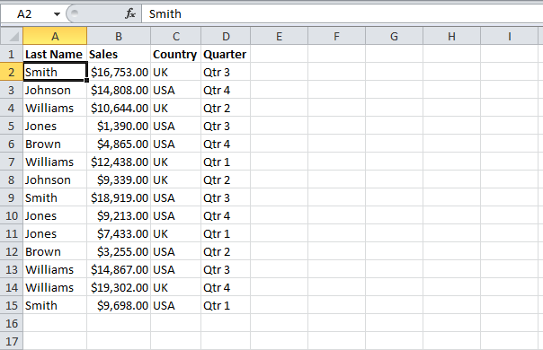

Created by Ryan Whitley / @apollolm
"Postgres" is an open source Relational Database Management System (RDBMS)
What are you talking about?
Warehouse Analogy
Just about any service you can think of uses a database.
Meant for large volumes of data, but works fine for small efforts.
Think of a database as a set of containers in which to store your data.
Think of an Excel table.
A relational database is a collection of tables.
Just like Excel, tables are made up of rows and columns
A table's SCHEMA is the set of columns for a particular table
Columns have types such as text, integer, double precision & geometry
Unlike Excel, RDBMS' typically involve tables that can 'talk' to each other.
The product price information table talks to the product inventory table.
Why is this useful?
Normalization is the act of breaking up your data
The DB is like a black box.
You need a way to peek inside and see what's going on
Use a DB "Client"
Let's create 2 tables using PGAdminIII
What sort of information would we want to store in the columns of a product table? Inventory?
Let's create some tables.
For product table, let's add the columns
I need to mention Keys.
Keys are a unique identifier for a row.
Add a key based on the id column.
Let's add a few rows to these tables to illustrate how they work
Open the products table (right click in PGAdminIII and choose 'view' -> 'all rows')
There are 4 basic high level DB operations:
PostGres and other DBs have their own Query Languages.
SQL = Structured Query Languages
Most SQL is similar between DB systems. If you know one then you could adapt to the rest.
Get all rows and columns from the products table
SELECT * FROM product;
Run it.
Get only 'Sporting Goods' products
SELECT * FROM product
WHERE category = 'Sporting Goods';
Run it.
Get only 'Adidas' products
SELECT * FROM product
WHERE brand = 'Sporting Goods';
Earlier, we discussed relationships & keys
In order for the rows inside of tables to talk to each other, they need to have something in common.
This is another use for a key.
Must be unique to work properly.
A new way to add data: INSERT
INSERT INTO *table* (column1, column2) VALUES (value1, value2)
The benefit is that even if 0 items remain, there's still an entry in the product table to let us know that we should restock.
Reduce the redundancy of the store column by making a Store table
This makes it easy to ask questions such as "Which stores are in 98126 zip code?"
Have more store info such as address, telephone #, hours, pictures.
You might imagine how a store inventory system might work. (Auto re-ordering of merchanise when inventory is low)
One powerful use of an RDBMS is to summarize/tally large numbers of rows.
SELECT SUM(price) FROM product
What will this tell us?
Delete a row
DELETE FROM product where id = 2;
What will happen?
Find an existing row and update some values
UPDATE product SET price = 2.99 where id = 2;
What will happen? What if you leave off the where clause?
We can now create a new DB, create tables, add data and query data.
Any questions?
Show a bare bones node app that connects to our DB and returns info.
DEMO
What topics did we just cover?
This presentation can be found at http://tech-diversified.github.io/Workshops/PostGres